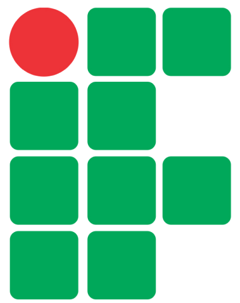

<mat-toolbar class="toolbar-menu" color='primary'>
  <div class="toolbar-title">
    <div id="background-logo">
      
    </div>
    <span id="title-toolbar">SisFIC - Sistema de Gerenciamento FIC</span>
  </div>
  <span id="date">{{hour}}</span>
</mat-toolbar>

<div [hidden]="progressBar">
  <mat-progress-bar id="progress-bar" mode="indeterminate"></mat-progress-bar>
</div>

<mat-tab-group>
  <mat-tab label="Alunos"> Gabriel Costa </mat-tab>
  <mat-tab label="Professores"> Thalles Kaik </mat-tab>
  <mat-tab label="Cursos FIC"> Bernardo Amazonas </mat-tab>
  <mat-tab label="Turmas"> <app-turmas></app-turmas> </mat-tab>
</mat-tab-group>

<!--
<mat-toolbar id="footer">
  <div>
    <span>SisFIC - Sistema de Gerenciamento FIC 2021</span>
  </div>
</mat-toolbar> -->
